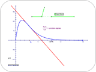
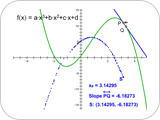
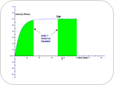
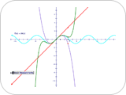
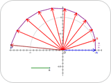
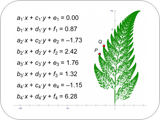

|
Calculus and BeyondNOTE: If you are using Internet Explorer and are unable to download the .zip activity files, right-click the download link and choose Save Target As to save to your computer.  Instantaneous RateStudents learn about instantaneous rates and derivatives by investigating the rate of change of a door’s angle as it closes. They look at the graph of the angle as a function of time, calculate the average rate of change between two points on the graph, make the time difference between the points smaller and smaller, and discover that the average rate (the slope of the secant) approaches a limiting value: the derivative. Download Activity Files (.zip)  Plotting the DerivativeStudents approximate the derivative by constructing a secant line between two points on the graph of a function and graphing the value of the secant’s slope. They improve the approximation by moving the points that determine the secant closer together. They edit the original function and practice predicting the shape of the derivative graph from the shape of the function graph. Download Activity Files (.zip)  One Type of IntegralStudents explore the concept of definite integral by using a velocity graph to estimate the distance a car travels. They count grid squares beneath the graph, and then make the squares smaller to improve the accuracy of their approximation. They use the same method to approximate definite integrals for several different functions. Download Activity Files (.zip)  Taylor SeriesStudents approximate the sine function using a Taylor series. They construct one point corresponding to the first partial sum and iterate to find points corresponding to the subsequent terms. Their final result is a graph to any desired depth. Download Activity Files (.zip)  A Geometric Approach to eiπStudents explore eiπ. They first explore the limit of (1+x/n)n for large values of n to find it approaches ex. They then replace x with iπ and use a geometric approach to multiplication on the complex plane to find the limit and evaluate eiπ. Download Activity Files (.zip)  Barnsley's Fractal FernStudents create several functions that transform a point and then iterate the transformation, choosing randomly among the functions, to create a fractal fern and other fractal shapes.Download Activity Files (.zip) |